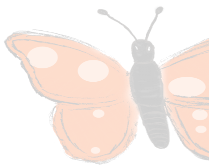

Twitter
Reddit

Github

Telegram

This new type of artwork provides a lot of value to creators and viewers alike. Let's consider each
stakeholder separately:
For artists:
As blockchain art, Infinite animation provides the same ability to easily handle the sale of pieces, the management of copyright, the guarantees around providence, and the certainty of royalties that are in place with NFTs today. But infinite animation provides so much more.
IA solves copyright rights. Because nobody is able to copy IA, only a purchaser is able to use and show the artwork. No more stolen pieces without attribution because the concept is impossible with IA. Additionally, all pieces have strong providence tied to the blockchain. At all times an active piece is easily tracked on the blockchain to find the original address of the artist. No artist can claim your work as their own. Lastly, forging of the artwork for skilled artists attempting to recreate the same scene is difficult if not impossible because the forger never has access to the algorithm that makes the art, even if they can visually see the current picture.
IA is futureproof. With the popularization of DALLE-2 and AI-generated artwork a new question arises. Will the creation of future artwork be dominated by machines? Do human artists have a future?
Again IA is the answer. IA requires the artist to write code - integrating a vision of how an object should work with the code to make it happen. It is impossible for a task-specific machine to do this. So long as general purpose AI doesn't exist (note: we currently aren’t even close), infinite animation can only be created by humans.
The applicable artwork space is massive. This type of artwork, while currently in its infancy will be critical across all virtual media going forward. IA will be the basis for virtual reality, video games, advertisements and even movies. Truly, IA is the basis for living artwork - artwork which is inextricably linked to the blockchain. Artists currently have the chance to pioneer this space by creating some of the first pieces.
For Collectors:
All 3 of IA's crucial properties come into play to create the hardest digital artwork in existence. The perpetual quality creates a new paradigm for artwork where art is forever novel, changing, and interesting. The uncopyable quality means that the artwork can't be stolen or forged: ensuing uniqueness and exclusivity. The scarce quality means that supply is forever limited and that the artwork will be based on the value of its message - never undermined by overly prolific artists or NFT economics.
Additionally, the artwork creation process is not trivial. Artists have to spend a significant amount of time to create a single piece - meaning that each piece represents a fraction of that artist's lifetime. An artist isn't willing to put out irresponsible pieces for it hurts their brand and waste's their own time.
These 3 properties come together to create the perfect storm for ensuring value. Add in strong providence guarantees by the blockchain; MIMICRY's proprietary vetting platform; and artist’s limited production ensuring primary artist sales only happen if the price is right. The value can only increase from there.
Finally, let's consider the art's valuation. The art alone has some value in the natural ability for a viewer to enjoy the visual. This is true of all visual artwork. While a revenue stream is not required to ensure value, it certainly hardens the argument. And infinite artwork has 2 different forms of revenue streams.
The artwork constantly updates. This means that owners can host viewing event - with never seen before content. Naturally, admission to these viewing events can be sold by the owner in the way that movie theaters sell tickets. At the owner/artist discretion, the viewing events can be continuous like a 24/7 live stream; or they can be discrete, only revealing the updates to the public every week, year, or decade. Admission to these events creates a constant revenue stream for the owner.
Each piece of infinite animation can be designed by an artist to create offshoot NFTs. These could be PFP's, OneTimeScenes, collectables, or another format all possible within the MIMICRY platform. These offshoot NFTs can be sold 100% separately or in conjunction for the overall piece. This is a second type of revenue from holding infinite artwork.
Artists have strong reasons to want to learn and produce infinite animation as their main style of artwork. Collectors have strong reasons to hold pieces and want to acquire artwork they enjoy or from artists they believe skilled. All in all, it couldn’t be clearer that it’s valuable to spend your time delving deeper into the infinite animation space.
For artists:
As blockchain art, Infinite animation provides the same ability to easily handle the sale of pieces, the management of copyright, the guarantees around providence, and the certainty of royalties that are in place with NFTs today. But infinite animation provides so much more.
IA solves copyright rights. Because nobody is able to copy IA, only a purchaser is able to use and show the artwork. No more stolen pieces without attribution because the concept is impossible with IA. Additionally, all pieces have strong providence tied to the blockchain. At all times an active piece is easily tracked on the blockchain to find the original address of the artist. No artist can claim your work as their own. Lastly, forging of the artwork for skilled artists attempting to recreate the same scene is difficult if not impossible because the forger never has access to the algorithm that makes the art, even if they can visually see the current picture.
IA is futureproof. With the popularization of DALLE-2 and AI-generated artwork a new question arises. Will the creation of future artwork be dominated by machines? Do human artists have a future?
Again IA is the answer. IA requires the artist to write code - integrating a vision of how an object should work with the code to make it happen. It is impossible for a task-specific machine to do this. So long as general purpose AI doesn't exist (note: we currently aren’t even close), infinite animation can only be created by humans.
The applicable artwork space is massive. This type of artwork, while currently in its infancy will be critical across all virtual media going forward. IA will be the basis for virtual reality, video games, advertisements and even movies. Truly, IA is the basis for living artwork - artwork which is inextricably linked to the blockchain. Artists currently have the chance to pioneer this space by creating some of the first pieces.
For Collectors:
All 3 of IA's crucial properties come into play to create the hardest digital artwork in existence. The perpetual quality creates a new paradigm for artwork where art is forever novel, changing, and interesting. The uncopyable quality means that the artwork can't be stolen or forged: ensuing uniqueness and exclusivity. The scarce quality means that supply is forever limited and that the artwork will be based on the value of its message - never undermined by overly prolific artists or NFT economics.
Additionally, the artwork creation process is not trivial. Artists have to spend a significant amount of time to create a single piece - meaning that each piece represents a fraction of that artist's lifetime. An artist isn't willing to put out irresponsible pieces for it hurts their brand and waste's their own time.
These 3 properties come together to create the perfect storm for ensuring value. Add in strong providence guarantees by the blockchain; MIMICRY's proprietary vetting platform; and artist’s limited production ensuring primary artist sales only happen if the price is right. The value can only increase from there.
Finally, let's consider the art's valuation. The art alone has some value in the natural ability for a viewer to enjoy the visual. This is true of all visual artwork. While a revenue stream is not required to ensure value, it certainly hardens the argument. And infinite artwork has 2 different forms of revenue streams.
The artwork constantly updates. This means that owners can host viewing event - with never seen before content. Naturally, admission to these viewing events can be sold by the owner in the way that movie theaters sell tickets. At the owner/artist discretion, the viewing events can be continuous like a 24/7 live stream; or they can be discrete, only revealing the updates to the public every week, year, or decade. Admission to these events creates a constant revenue stream for the owner.
Each piece of infinite animation can be designed by an artist to create offshoot NFTs. These could be PFP's, OneTimeScenes, collectables, or another format all possible within the MIMICRY platform. These offshoot NFTs can be sold 100% separately or in conjunction for the overall piece. This is a second type of revenue from holding infinite artwork.
Artists have strong reasons to want to learn and produce infinite animation as their main style of artwork. Collectors have strong reasons to hold pieces and want to acquire artwork they enjoy or from artists they believe skilled. All in all, it couldn’t be clearer that it’s valuable to spend your time delving deeper into the infinite animation space.
BLOG PHOTO
Steven Parad
2022.07.26
2022.07.26
Understanding Infinite Animation: Valuable
